Intro to R Part 2:
Packages, Piping, and Importing Data

October
12, 2022
https://ucanr-igis.github.io/IntroR_Oct22/


Review from Part I
R as a fancy calculator:
(pi
* 5 ^ 2) / sqrt(4 / 3)
Saving results as objects:
my_volume = (4 / 3) * pi * (1.5 ^ 3)
All R objects have a class (e.g., numeric, character,
data frame)
Objects that contain multiple values of the same class are called
vectors
Some functions that return
vectors:
seq()
rnorm()
sample()
You can build vectors from scratch using:
c()
You can subset or extract elements from vectors using square
brackets:
LETTERS[1:4]
LETTERS[c(T,T,T,T,F,F,F,F,F,F,F,F,F,F,F,F,F,F,F,F,F,F,F,F,F,F)]
Functions and operators that do something to each element of a
vector and return another vector are said to be
vectorized
+ - * /
round(), abs()
Functions that take multiple elements of a vector and spit out a
single value are said to be aggregate
functions
sum(), min(), mean(), max()
R comes with some basic plot functions:
hist(x)
boxplot(x)
plot(x, y) ## scatterplot
plot(x, y, type = 'b') ## 'b' = plot both points and lines
Today’s Outline
packages
functions
piping syntax
exercise
R Packages

Packages are what R calls extensions or
add-ons.
What’s in a package?
- additional functions!
- function help pages
- tutorials (Vignettes)
- datasets
Installing and Using Packages
Three simple steps to use the functions in a package:
Figure out which package you need
Install (i.e., download) it (just once)

- Load it into memory (must do this every time you start
RStudio)
Functions
The keys to R’s superpowers are functions! There are
four things you need to know to use a function:
What Do Functions Return?
- numbers
- dates
- text
- data frames and matrices
- spatial data
- plots
- trained regression models
- HTML widgets
- another function that returns a color ramp
- a drone image collection metadata record
- ⇒ almost anything you can think of can
be returned by a function!!
- ⇒ anything returned by a function can
also be saved to an object
Which function should I use?
Finding the right R function, half the battle is.
- Jedi MasteR
Yoda
|
|
Ask your friends
Ask Google
Cheatsheets!
Piping

Piping syntax is an alternative way of writing
arguments into functions.
With piping, you use the pipe operator %>% or |> to ‘feed’ the result of one function
into the next function.
Piping allows the results of one function to be passed as the
first argument of the next function. Hence a series of
commands to be written like a sentence.
Example
Consider the expression:
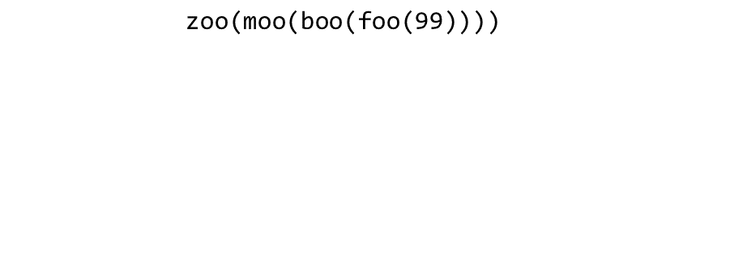
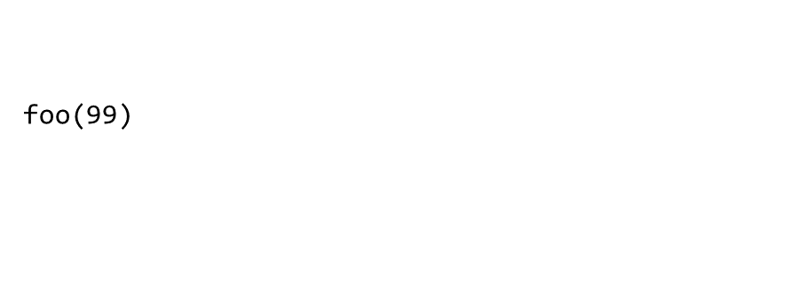
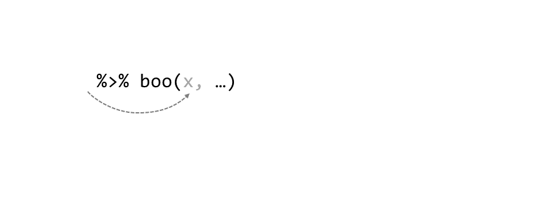
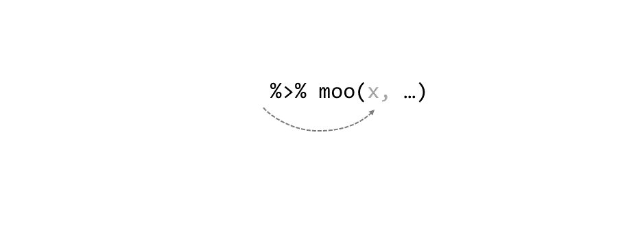
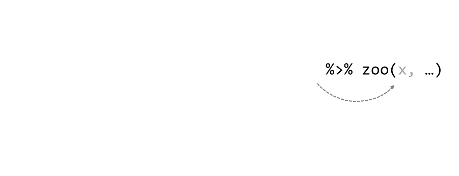
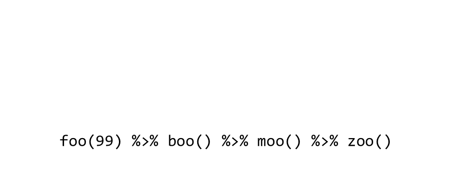
Piping
RStudio keyboard shortcut for pipe operator:
Configure the shortcut under Global Options >> Code
%>% (default)
|> (‘native’ pipe
introduced R4.0)
Load piping from magrittr or dplyr packages
Pipes are often used to break an expression across multiple
lines:
seq(1, 10, 0.1) %>%
log() %>%
sum()
## [1] 141.4023
Exercise 3: Packages and Piping
Exercise 3 Topics
- Installing packages
- Loading packages into memory with
library()
- Piping syntax
Break!

Importing Data
When you import (or export) data, you’ll have to enter a
path to a file.
Paths can be complete or relative
to the working directory.
Complete path:
my_data = read.csv("C:/Users/Andy/Documents/LREC/n2_study/plots/plot34a/data/soil_moist.csv")
Example of a relative path:
my_data = read.csv("./data/soil_moist.csv")
Windows users: Beware the slashes!
The following will not work beause of the slashes:
C:\noworm\trials\data
Back slashes must be converted to one of the following:
C:/noworm/trials/data
C:\\noworm\\trials\\data
Working Directory
my_data = read.csv("./data/soil_moist.csv")
When using relative paths, the first '.' represents the
working directory.
Even though you don’t see it, there is always
working directory. You can view the current working directory with:
Changing the working directory is easy!
setwd("D:/Data/DroneData/black_rascal_creek")
or use RStudio:
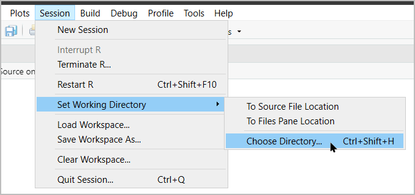
Useful RStudio Features
RStudio Projects
RStudio Projects are always based on a folder (look
for the .Rproj file).
When you open a RStudio project, the working directory is set the
project folder.
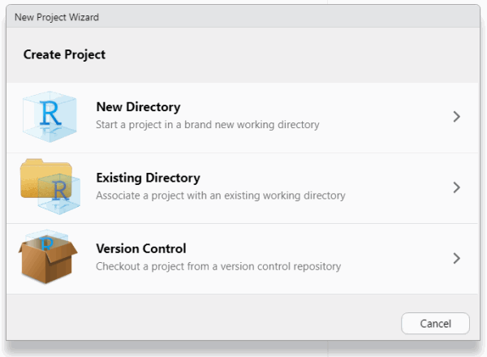
RStudio Import Dataset Wizard
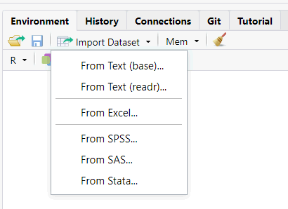

read.csv() works with direct URLs also:
cars_df <- read.csv("https://raw.githubusercontent.com/ucanr-igis/intror_feb22/main/data/stopping_dist_cars.csv")
Got data on Google Sheets? Use the googlesheets4
package.
Best Practices
Organize up your R projects in folders
(directories).
Put your data and output files in subdirectories.
Create an RStudio Project in the project
folder.
Use relative paths in your import and export functions.

Data Frames

R has two data classes that organize data in rows and columns:
rows
aka:
- record
- case
- feature (spatial)
columns
aka: variable, field
## Sepal.Length Sepal.Width Petal.Length Petal.Width Species
## 1 5.1 3.5 1.4 0.2 setosa
## 2 4.9 3.0 1.4 0.2 setosa
## 3 4.7 3.2 1.3 0.2 setosa
## 4 4.6 3.1 1.5 0.2 setosa
## 5 5.0 3.6 1.4 0.2 setosa
## 6 5.4 3.9 1.7 0.4 setosa
Key concepts
- columns of a data frame are vectors
- columns have names
- you can refer to columns by their name or
position
Pulling Out Pieces of a Data Frame
Single Column
To get an individual column, use $
## Girth Height Volume
## 1 8.3 70 10.3
## 2 8.6 65 10.3
## 3 8.8 63 10.2
## 4 10.5 72 16.4
## 5 10.7 81 18.8
## 6 10.8 83 19.7
## [1] 70 65 63 72 81 83 66 75 80 75 79 76 76 69 75 74 85 86 71 64 78 80 74 72 77
## [26] 81 82 80 80 80 87
trees$Height %>% summary()
## Min. 1st Qu. Median Mean 3rd Qu. Max.
## 63 72 76 76 80 87
You can add a column to a data frame using the
$ notation. Write an expression that:
References a new column with the $ operator as though it
existed
Assigns the new column values
R will create the column on the fly and add it to
the data frame
Example:
trees$select_me <- sample(c(T,T,F), size = nrow(trees), replace = TRUE)
trees %>% head()
## Girth Height Volume select_me
## 1 8.3 70 10.3 TRUE
## 2 8.6 65 10.3 TRUE
## 3 8.8 63 10.2 TRUE
## 4 10.5 72 16.4 TRUE
## 5 10.7 81 18.8 FALSE
## 6 10.8 83 19.7 TRUE
Multiple Rows and/or Columns
You can subsample rows and columns from a data frame
together with square bracket notation:
my_dataframe[rows-expression, columns-expression]
Where rows-expression is a vector of integers of Logicals
(TRUE/FALSE) of the row numbers you want.
## Girth Height Volume select_me
## 5 10.7 81 18.8 FALSE
## 6 10.8 83 19.7 TRUE
## 7 11.0 66 15.6 TRUE
## 8 11.0 75 18.2 TRUE
## 9 11.1 80 22.6 FALSE
## 10 11.2 75 19.9 TRUE
trees[ trees$Height > 80, ]
## Girth Height Volume select_me
## 5 10.7 81 18.8 FALSE
## 6 10.8 83 19.7 TRUE
## 17 12.9 85 33.8 TRUE
## 18 13.3 86 27.4 TRUE
## 26 17.3 81 55.4 TRUE
## 27 17.5 82 55.7 TRUE
## 31 20.6 87 77.0 TRUE
Even if you’re subsetting just rows or just columns, you still need
the comma in the square brackets!
Exercise 4: Importing Data and Working with Data Frames
Exercise 4 Topics
- create data frames from scratch
- explore R’s built-in data frames
- compute summary stats on individual columns
- import a csv
- subset rows
- identify NA values
Review: Data Frames
The most common class for storing tabular data in R is the
data frame
View the first few rows of a data frame with
head()
View an entire data frame with
View()
Grab an individual column with $
Grab specific rows and columns with my_df[rows-expression,
cols-expression]
where
rows-expression and
cols-expression are a vector
of:
integers
logicals (TRUE / FALSE) (or an expression that returns a vector of
logicals) column names
Linear Regression Model (teaser)
END!


 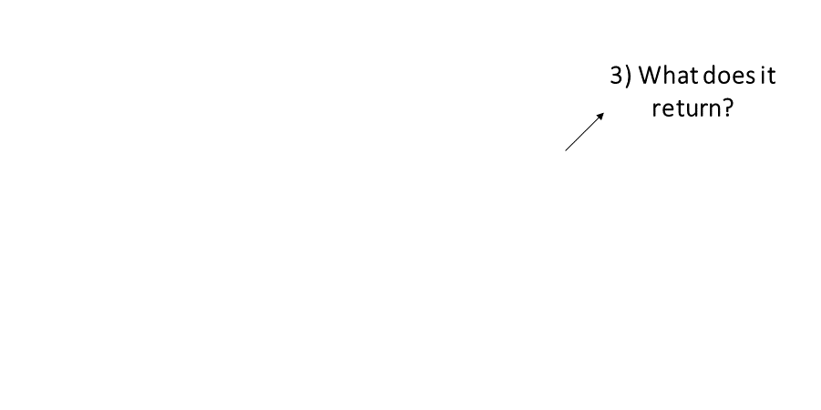
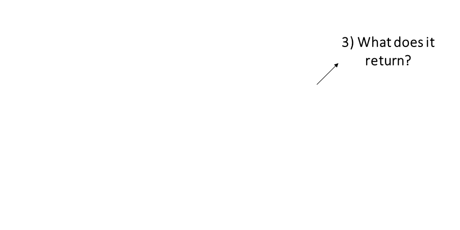